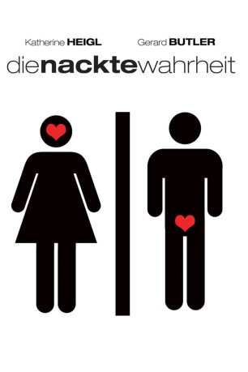

#8643 Die Nackte Wahrheit
Alternativ: The Ugly Truth
 
 IMDB-Wertung: 6.5 / 10
IMDB-Wertung: 6.5 / 10  Metascore: 0
Metascore: 0 
Abby, die erfolgreiche Produzentin einer morgendlichen Unterhaltungssendung, stellt hohe Erwartungen an die Männerwelt. Mike, der chauvinistische TV-Star, mit dem sie zusammenarbeitet, ist dagegen überzeugt, dass Männer nur das “Eine” wollen. Fest entschlossen, sich dennoch ihren Traummann zu angeln, lässt sich Abby bei einer vielversprechenden neuen Liebschaft einige Tipps von Mike geben – mit überraschenden Ergebnissen für alle Beteiligten.
Jahr: 2009
Dauer: 95 Minuten
FSK: 12
Land: USA Studio: Columbia PicturesTonspuren: DTS - ,
Untertitel:
Auflösung: 1080p (1920x800) Größe: 7424 MB
Genre: Komödie, Liebe
Regisseur:  Robert Luketic
Robert Luketic
Drehbuch: Nicole Eastman
Soundtrack: Aaron Zigman
Darsteller:
 Katherine Heigl als Abby
Katherine Heigl als Abby Gerard Butler als Mike Chadway
Gerard Butler als Mike Chadway Bree Turner als Joy
Bree Turner als Joy- Eric Winter als Colin
 Nick Searcy als Stuart
Nick Searcy als Stuart Jesse D. Goins als Cliff
Jesse D. Goins als Cliff Cheryl Hines als Georgia
Cheryl Hines als Georgia John Michael Higgins als Larry
John Michael Higgins als Larry- Noah Matthews als Jonah
 Bonnie Somerville als Elizabeth
Bonnie Somerville als Elizabeth- John Sloman als Bob
 Yvette Nicole Brown als Dori
Yvette Nicole Brown als Dori Nate Corddry als Josh
Nate Corddry als Josh Allen Maldonado als Duane
Allen Maldonado als Duane Steve Little als Steve
Steve Little als Steve Dan Callahan als Rick
Dan Callahan als Rick- Arielle Vandenberg als Candi
- Kevin Connolly als Jim
- Rocco DiSpirito als Guest Chef
 Valente Rodriguez als Javier
Valente Rodriguez als Javier Jamison Yang als KPQU Big Wig
Jamison Yang als KPQU Big Wig- Blake Robbins als KPQU Big Wig
 Tom Virtue als Balloon Pilot
Tom Virtue als Balloon Pilot- Adam J. Harrington als Jack Magnum
- J. Claude Deering als Drunk Guy
- Alexis Krause als Cute Brunette
 Craig Ferguson als Craig Ferguson
Craig Ferguson als Craig Ferguson- Mimi Michaels als Female Fan
 Donnie Smith als Boyfriend
Donnie Smith als Boyfriend- Marc D. Wilson als Bell Man
- Jeff Newburg als KPQU Production Assistant
 Vicki Lewis als Saleswoman
Vicki Lewis als Saleswoman- David Lowe als Cameraman
- Yolanda Pecoraro als Sexy Woman
- Brooke Stone als Karen
 John Jason Bailey als Bar (uncredited)
John Jason Bailey als Bar (uncredited)- Kevin Bangos als Stagehand (uncredited)
- April Betts als Salsa Dancer (uncredited)
- Skyler Caleb als Station Employee (uncredited)
- Sandra Daubert als Mike's Mom (uncredited)
- Sabrina Diaz als Salsa Dancer (uncredited)
- Kim Donovan als Woman on Bike (uncredited)
- Christina Gabrielle als Wedding Guest (uncredited)
 Jerald Garner als Restaurant Guest (uncredited)
Jerald Garner als Restaurant Guest (uncredited)- Lejla Hadzimuratovic als Salsa Dancer (uncredited)
 Justin Rodgers Hall als Himself (uncredited)
Justin Rodgers Hall als Himself (uncredited)- Stephen Hansen als Devil's Baseball Hero (uncredited)
- James Howarth als Date (uncredited)
- Bruna Matsin als Production Manager (uncredited)
- Tina Mayer als Salsa Dancer (uncredited)
Datei: X:\2009(N-Z)\Nackte Wahrheit, Die (2009, FSK12, 1920x800).mkv seit 11.04.2018
Festplatte: HD 2009(G-Z)-2010(A-F)
 Es gibt insgesamt 99 Filme in der Gruppe '2009(N-Z)'
Es gibt insgesamt 99 Filme in der Gruppe '2009(N-Z)'